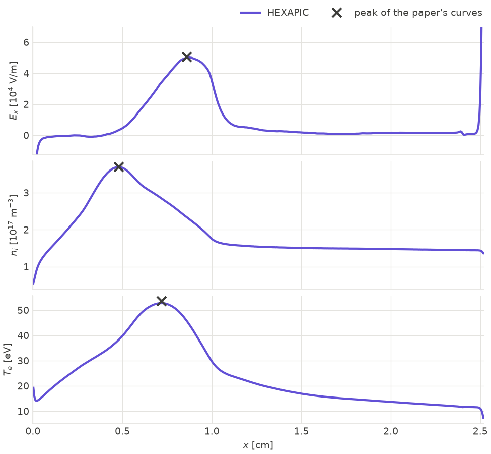
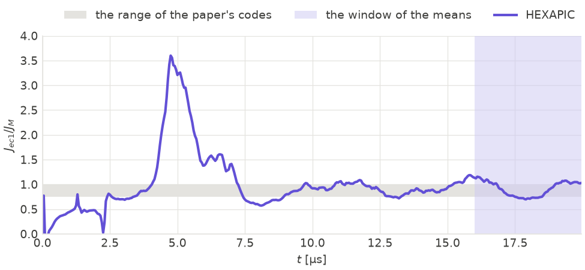

LANDMARK: axial-azimuthal Hall thruster#
The benchmark of Charoy and others [2019] is an E×B discharge as in the channel and the plume of a Hall thruster. The axial direction \(x\) runs from the anode to the cathode, the azimuthal direction \(y\) is periodic, and the radial magnetic field points out of the plane. The electrons drift along \(y\), and the instability that grows in this drift carries them across the magnetic field towards the anode. Seven particle-in-cell codes agree on the result within 5 %, which makes the case a test of the whole code on a turbulent, magnetized plasma.
Setup#
Domain |
2.52 cm × 1.28 cm, periodic in \(y\). The benchmark’s domain is 2.5 cm; the extra 0.2 mm lie behind the cathode line, because the number of cells along an axis is a multiple of 8. |
Grid |
504 × 256 cells of 50 µm |
Walls |
anode at \(x = 0\), 200 V; grounded wall at \(x = 2.52\) cm; both absorb |
Magnetic field |
along \(z\), a Gaussian profile in \(x\): 6 mT at the anode, 10 mT at 0.75 cm, 1 mT at 2.5 cm |
Plasma at the start |
electrons (10 eV) and Xe⁺ (0.5 eV), \(5\times10^{16}\ \mathrm{m^{-3}}\) |
Ionization |
no collisions. Electron–ion pairs are created between 0.25 and 1 cm at a rate with a cosine profile, which gives the ion current \(J_M = 400\ \mathrm{A/m^2}\). |
Cathode |
at \(x = 2.4\) cm. Each step it emits as many electrons (10 eV) as the anode collected net, and the mean potential on this line is held at 0 V. |
Particles |
case 2 of the benchmark: 75 per cell and species at the start, about \(37\times10^{6}\) electrons at the end |
Time step |
\(5\times10^{-12}\) s |
Run |
\(4\times10^{6}\) steps (20 µs), output every 10 000 steps |
Field solver |
GMGa3, the 2-D multigrid; relative tolerance \(10^{-5}\) |
Build |
linear particle shape (CIC), as the codes of the benchmark use: |
Cost |
about 6 hours on one NVIDIA A100 |
Running#
The case needs a build with the linear particle shape. See Build options.
cmake --preset default -B build-cic -DHEXAPIC_SHAPE_ORDER=1 && cmake --build build-cic -j
python examples/thrusters/landmark/case.py runs/landmark
build-cic/HEXAPIC runs/landmark/case.toml > runs/landmark/run.log
python examples/thrusters/landmark/analyze.py runs/landmark
case.py writes runs/landmark/case.toml. analyze.py reads the series
and the log of the run, run.log, which has the currents of the walls and
of the cathode. It prints the numbers below and writes results.json and
the two figures into the run’s directory.
Option of |
|
|---|---|
|
the benchmark’s case: 1 (150 particles per cell and species at the start), 2 (75, the default) or 3 (300) |
|
the number of steps |
|
an output every |
|
write the frames that HEXAPIC / VIZ shows during the run |
Results#
The paper compares its codes over the last 4 µs of the 20 µs. All numbers below are means over this window.
Axial profiles against the paper#
The profiles of the axial field \(E_x\), of the ion density \(n_i\) and of the
electron temperature \(T_e\) are averaged over \(y\) and over the window. The
paper shows the curves of the seven codes in its figure 6. Their peaks are
read off that figure and stored in reference/charoy2019/peaks.csv.

The axial profiles of HEXAPIC, averaged over \(y\) and over 16 to 20 µs. The crosses are the peaks of the curves in figure 6 of the paper.
HEXAPIC |
Paper |
Ratio |
|
|---|---|---|---|
Peak of \(E_x\) [V/m] |
\(5.01\times10^{4}\) at 0.870 cm |
\(5.05\times10^{4}\) at 0.86 cm |
0.992 |
Peak of \(n_i\) [\(\mathrm{m^{-3}}\)] |
\(3.69\times10^{17}\) at 0.478 cm |
\(3.7\times10^{17}\) at 0.48 cm |
0.998 |
Peak of \(T_e\) [eV] |
52.8 at 0.723 cm |
53.5 at 0.72 cm |
0.986 |
\(n_i\) in the plume, 1.5 to 2.2 cm [\(\mathrm{m^{-3}}\)] |
\(1.49\times10^{17}\) |
\(1.45\times10^{17}\) |
1.03 |
The three peaks agree with the paper within 1.4 %, and the density of the plume within 3 %. The codes of the paper agree with each other within 5 %. The paper’s numbers are read off curves, which limits them to about 1 %.
Cathode current against the paper#
The cathode emits the electron current \(J_{ec}\). A part of it neutralizes the ion beam that leaves the domain, \(J_{ic}\). The rest, \(J_{ec1} = J_{ec} - J_{ic}\), enters the channel and crosses the magnetic field. Its ratio to the imposed ion current \(J_M\) measures the transport of the electrons across the field, which only the instability provides.

The current \(J_{ec1}/J_M\) over the run. The grey band is the range of the paper’s codes, and the violet band is the window of the means.
\(J_{ec1}/J_M\) |
|
|---|---|
HEXAPIC, mean and standard deviation over the window |
\(0.92 \pm 0.15\) |
Paper, the range of its codes (figure 3) |
0.75 to 1 |
The current overshoots to 3.6 near 5 µs, as in the paper, and then settles inside the range of the paper’s codes.
Files#
|
the case as a PICMI script |
|
case 2 as |
|
the profiles and the cathode current, from a run and its log |
|
the figures above, as |
|
the peaks read off the paper’s figures |
|
the sources of the reference data |
The script#
case.py
#!/usr/bin/env python3
"""landmark: the 2-D axial-azimuthal Hall thruster benchmark of Charoy et al. (2019).
python case.py DIR # DIR/case.toml
python case.py DIR --run # and HEXAPIC on it (build/HEXAPIC; --hexapic: another), into DIR/output
python case.py # the case.toml beside this script
An E x B discharge as in the channel and the plume of a Hall thruster: x is
axial, y azimuthal (periodic), the radial magnetic field points out of the
plane.
x = 0 the anode, 200 V; ions and electrons absorbed
0.25-1 cm the ionisation: electron-ion pairs created at the rate
S0 cos(pi (x - xm) / (x2 - x1)), 400 A/m^2 of ions; no collisions
0.75 cm the peak of B, 10 mT (6 mT at the anode, 1 mT at the far end)
2.4 cm the cathode: electrons emitted along y, as many each step as
the anode collected net, and the mean potential there held at 0
2.52 cm grounded; ions and electrons absorbed
The benchmark's domain is 2.5 cm (500 cells of 50 um). HEXAPIC's cells along
an axis are a multiple of 8, so the domain has 504: the 4 more lie behind the
cathode line. --case is the benchmark's: 1 (150 macroparticles per cell and
species at the start), 2 (75) or 3 (300). --steps and --every shorten the
run and set its output; --live writes the frames HEXAPIC / VIZ shows during
the run.
"""
import argparse
import math
from pathlib import Path
from hexapic import picmi
ap = argparse.ArgumentParser(description="the LANDMARK Hall thruster benchmark: case.toml")
ap.add_argument("dir", nargs="?", type=Path)
ap.add_argument("--case", type=int, choices=(1, 2, 3), default=2, help="the benchmark's case (default 2)")
ap.add_argument("--steps", type=int, default=4000000, help="4e6: the benchmark's 20 us")
ap.add_argument("--every", type=int, default=10000, help="an output every this many steps")
ap.add_argument("--live", action="store_true")
ap.add_argument("--run", action="store_true")
ap.add_argument("--hexapic", type=Path, help="the binary --run runs (default build/HEXAPIC)")
args = ap.parse_args()
HERE = Path(__file__).resolve().parent
# the benchmark's parameters (its table 1 and section 2)
LX, LY, NX, NY = 2.5e-2, 1.28e-2, 500, 256
DT = 5e-12
U0 = 200.0 # the anode [V]
N0, TE0, TI0 = 5e16, 10.0, 0.5 # the plasma at the start [m^-3], [eV], [eV]
X1, X2, S0 = 0.25e-2, 1.0e-2, 5.23e23 # the ionisation [m], [m], [m^-3 s^-1]
X_E, TE_EMIT = 2.4e-2, 10.0 # the cathode's emission line [m], its electrons [eV]
B0, BMAX, BLX = 6e-3, 10e-3, 1e-3 # B at x = 0, its peak, at x = Lx [T]
XBMAX, SIGMA = 0.3 * LX, 0.25 * LX # the peak's position, the width of both Gaussians [m]
PPC = {1: 150, 2: 75, 3: 300}[args.case]
dx = LX / NX
nxd = -(-NX // 8) * 8 # the domain's cells along x: 504
def b(x):
"""The radial field, the paper's equation (2) with the coefficients of its appendix A."""
lo = x < XBMAX
g = math.exp(-0.5 * ((XBMAX if lo else LX - XBMAX) / SIGMA) ** 2)
end = B0 if lo else BLX
return (BMAX - end) / (1 - g) * math.exp(-((x - XBMAX) ** 2) / (2 * SIGMA ** 2)) + (end - BMAX * g) / (1 - g)
xs = [dx * k for k in range(nxd + 1)] # B at every node
grid = picmi.Cartesian2DGrid(number_of_cells=[nxd, NY], lower_bound=[0.0, 0.0], upper_bound=[nxd * dx, LY],
lower_boundary_conditions=["dirichlet", "periodic"],
upper_boundary_conditions=["dirichlet", "periodic"])
sim = picmi.Simulation(
solver=picmi.ElectrostaticSolver(grid=grid, hexapic_zero_line_x=X_E), time_step_size=DT, max_steps=args.steps,
particle_shape="linear", hexapic_title="landmark", hexapic_run={"init": "local"},
hexapic_description="The 2-D axial-azimuthal Hall thruster benchmark of Charoy et al. (2019), "
f"case {args.case}: {PPC} macroparticles per cell and species at the start.",
hexapic_output={"final_particles": False} | ({"live": True} if args.live else {}),
hexapic_magnetic_field={"type": "profile", "axis": "x", "position": xs, "vector": [[0.0, 0.0, b(x)] for x in xs]})
electrons = picmi.Species(particle_type="electron", name="electrons",
initial_distribution=picmi.UniformDistribution(density=N0, hexapic_temperature_eV=TE0))
ions = picmi.Species(particle_type="Xe", charge_state=1, name="ions",
initial_distribution=picmi.UniformDistribution(density=N0, hexapic_temperature_eV=TI0,
hexapic_same_positions_as="electrons"))
layout = picmi.PseudoRandomLayout(n_macroparticles_per_cell=PPC)
sim.add_species(electrons, layout=layout)
sim.add_species(ions, layout=layout)
sim.add_diagnostic(picmi.FieldDiagnostic(grid=grid, period=args.every))
sim.add_boundary(picmi.Boundary(type="biased", location="x_lo", voltage=U0))
sim.add_boundary(picmi.Boundary(type="grounded", location="x_hi"))
# the ionisation: pairs at one position; the mean of the rate over [X1, X2] is 2 / pi S0
rate = 2.0 / math.pi * S0
region = {"lower": [X1, 0.0], "upper": [X2, LY]}
sim.add_source(picmi.Source(species=electrons, rate=rate, region=region, shape="sine", temperature_eV=TE0))
sim.add_source(picmi.Source(species=ions, rate=rate, region=region, shape="sine", temperature_eV=TI0,
same_positions_as="electrons"))
# the cathode: the charge the anode collected net, emitted again as electrons along x = X_E
sim.add_source(picmi.Source(species=electrons, balance_wall="x_lo",
region={"lower": [X_E, 0.0], "upper": [X_E, LY]}, temperature_eV=TE_EMIT))
if args.run and args.dir is None:
ap.error("--run needs a directory for the run")
print(sim.write_input_file((args.dir or HERE) / "case.toml"))
if args.run:
sim.run(**({} if args.hexapic is None else {"hexapic": args.hexapic.resolve()}))
References#
The benchmark, its parameters and the results of its seven codes: Charoy and others [2019].
The paper’s numbers (charoy2019/)#
peaks.csv: the peaks of the axial profiles of \(E_x\), \(n_i\) and \(T_e\), read by eye off the curves of the paper’s figure 5 (case 1) and figure 6 (case 2), where the seven codes lie within 5 % of each other. The reading is good to about 1 %.The ion density of the plume, \(1.45\times10^{17}\ \mathrm{m^{-3}}\), is read off the same figures. The range of \(J_{ec1}/J_M\), 0.75 to 1, is read off the paper’s figure 3. Both are constants in
analyze.py.